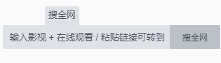

2. 使用方法
2.1 当你所打开的页面内存在视频时，应用将会弹出一个绿色的【播放按钮】
再点击该按钮即可播放该视频。
在播放页面中还可以将该视频【投屏】到智能电视上。
智能电视若不支持投屏，可在智能电视的【应用市场】中搜索【投屏】，安装一款适合您的投屏接收软件。
为了方便你的使用，本应用首页为你收集了很多实用的网站，满足你的影娱需求。
首页中的网站找不到你想看的电影？那就百度一下【影视名+在线观看】或者【影视名+在线播放】找一个可以在线观看的网站吧
2.2 首页的搜索框可直接将你输入的链接提取，再点击【百度一下】后可直接转到（如下图）
方便从其他APP（如网易云、微信、知乎等）复制视频链接，从而播放与投屏。
2.3 如果你所在的页面中有多个视频，而你想选择其中一个进行解析，你可以先在页面中播放该视频，随后点击【播放按钮】即可解析该视频
3. 广告拦截
太多的影视网站都充斥着流氓广告，影响用户体验，本应用尽力将影响用户体验的广告全部拦截。
但有时，广告拦截可能会误删一些重要内容，如果你觉得该网页功能不正常或缺失，可试着点击右上角的【菜单按钮】选择关闭广告拦截，刷新页面再看看。
如果未解决，说明该网站自身存在问题。
4. 高速加载
观看某些影视频繁处于加载中的状态，实在没有任何观影体验，所以开发该功能。
功能本质是边下边播，高速加载刚开始时会频繁加载几次，播放十分钟左右之后就不再频繁加载了。
有时会因为数据未加载完整，而导致播放时出现花屏、卡顿、音画不同步等现象，是因为此处数据段下载出错，此时你可以前进几秒，跳过这段坏数据，帮助程序回到正轨。
5. 浏览器全屏
应用浏览器页面的标题栏会随着你的滑动而【隐藏/显示】。
但在部分页面中是无法滑动的，这将导致你无法看到页面底部的内容，这时你可以在页面顶部上下垂直滑动，来【隐藏/显示】标题栏

6. 常见问题：暂不支持在低于Android4.4版本的手机上运行【广告拦截】
7. 常见问题：页面中有视频，应用却迟迟不显示【播放按钮】
这种情况是应用还没有探测到视频
你可以先播放页面中的视频，再看看应用是否会弹出【播放按钮】。
或者【刷新页面】再试一下
8. 常见问题：使用过程中出现奇怪的问题
软件开发总会由于经验不足而导致一些细节上的不足，如果遇到这种情况，请先重启应用，再试试是否还有该问题发生，如果问题依旧，请在【更多精彩】中，向开发者反馈并详述过程。
9. 常见问题：被跳转到恶意网页，并且无法后退
有时候网络运营商或网站为了牟利，将浏览器跳转到流氓广告网页，并且无法正常后退。
你可以尝试快速按2次后退键离开，或点击顶部的【主页】按钮回到主页
10. 关于应用
本应用致力帮助你获得更好的上网体验。
使用本应用则意味着您完全同意并愿意遵守本章节中所述的所有内容
点击接受则意味着您完全同意并愿意遵守下文所述的所有内容
用户协议：本应用的本意是为您提供更好上网和娱乐体验，您完全接受并理解本应用的一切行为和更改。本应用内部包含一个网页浏览器，其中所有内容均来自互联网，开发者和本应用无法对这些内容进行管制，也不对其负责，也与其无关。若您缺乏独立判断能力，以及辨明是非的能力，请不要使用本应用。本应用可能会被其他人改编再造，对于这些改编再造的版本，均与本应用开发者无关！
本应用的投屏功能仅限对自己的私人电视使用，禁止向公共场合的电视上投放！
使用本应用时，请遵守当地法律法规，否则造成的任何后果均由您本人承担责任！
本文内容可能会随时更新，恕不另行通知！
本文内容的最终解释权归开发者所有。
隐私政策：为了更好的为您服务，本应用会使用第三方服务（包括友盟+（网址：www.umeng.com）和AdMob（admob.google.com））匿名收集您的手机配置信息和网络IP以及本应用的使用情况，开发者会通过这些信息来不断优化应用，为您提供更好的服务。开发者不会无故与他人分享您的这些信息，至于第三方服务会如何保密和处理这些信息，请您自行访问相关网站查阅。本应用内部包含一个网页浏览器，其中的所有内容均来自互联网，这些来自互联网的网站可能有自己的用户协议、隐私政策等内容，请用户自行了解，这些网站和协议与本应用无任何关联！
免责声明：本应用包含一个网页浏览器，网页浏览器所显示的所有内容均来自互联网，本应用只是在此基础上优化一些使用体验，若其中的内容侵犯了您的利益，请自行联系相关网站的管理员。